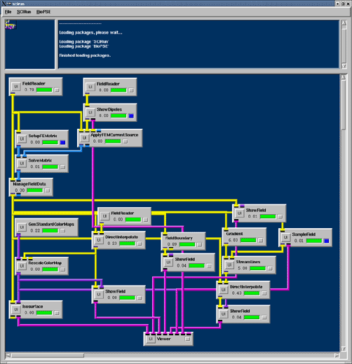
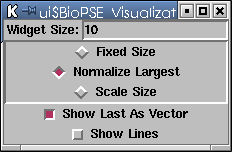
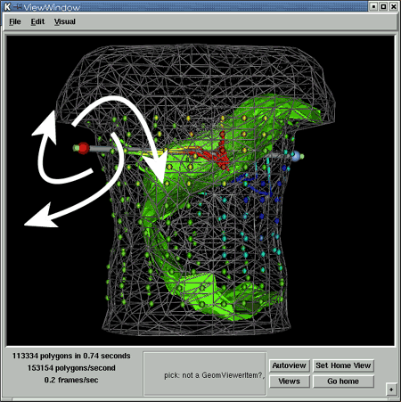

|
Chapter 7: Feedback
ShowDipolesChapter Overview Chapter 6 demonstrated how to combine simulation and visualization components to form a complete dataflow network. While the visualization components were dynamic (e.g., change the isovalue or streamline seed positions), the models were static. The final chapter illustrates adding a feedback module that will allow the user to change the position of the dipole model, and interactively visualize the results. Insert a module into the net from Chapter 6 as shown in Figure 7.1. The ShowDipoles module is located under the BioPSE/Visualization menu. ShowDipoles takes in a PointCloud of vectors (the SCIRun representation for a group of dipoles), allowing the user to visualize and interact with those dipoles. Insert a ShowDipoles module into the net. 
The ShowDipoles module has two outputs: a Field and a geometry object. The geometry object attaches to the Viewer module, graphically depicting the dipoles as arrow widgets. Dipoles in the same way as the streamlines widget in Chapter 3, Controlling Widgets. At each release of the mouse mouse, an updated version of the dipole positions passes through the Field output port and into the ApplyFEMCurrentSource module. The ShowDipoles UI (Figure 7.2) has several configuration options for controlling how the dipoles are graphically displayed. In the ShowDipoles UI:
These options result in a set of dipoles with uniformly scaled lengths. The longest vector now has a length 10. 
As the result of connecting the ShowDipoles module, there is a complete forward finite element network. Figure 7.3 contains the resulting visualization that appears in the ViewWindow. This is the same net provided in the SCIRun software installation as:Packages/BioPSE/nets/forward-fem.net 
The white arrows in Figure7.3 indicate that the widget can be moved around to interactively rotate and shift the rake widget
(these arrows will not appear in the ViewWindow when the user builds this network). Summary Experiment with the completed network. Explore how different dipole source positions and directions affect the voltage and electric Field distributions through the volume. Compare different linear solution
methods with the SolveMatrix module, or compare isosurface
extraction times using MC (Marching Cubes) versus the NOISE
(Near-Optimal IsoSurface Extraction) algorithm. SCIRun is a
flexible environment designed for interactive exploration of
what-if scenarios.
|